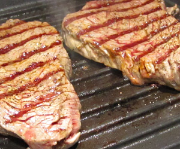

Zwiebelrostbraten vom Roastbeef mit Röstzwiebeln
5,5 von 62 Gemüsezwiebeln längs vierteln und in feine Streifen schneiden. Knoblauchzehe in dünne Scheiben schneiden. 4 El Olivenöl in einer Pfanne erhitzen. Zwiebeln anbraten, mit Salz und Zucker würzen. 3 Lorbeerblätter untermischen und bei mittlerer Hitze 3 Minuten braten. Etwas Tomatenmark zugeben und unter gelegentlichem Rühren 5 Minuten mitbraten. Mit 100 ml Rotwein ablöschen und fast vollständig einkochen. 250 ml Kalbsfond zugießen und bei mittlerer Hitze ca. 10 Minuten köcheln lassen. Pro Person 1-2 Rumpsteak mit je 1 El Olivenöl einstreichen und salzen. In einer heißen Grillpfanne auf jeder Seite ca. 1½2 Minuten braten. Pfeffern und in Alufolie gewickelt 3 Minuten ruhen lassen. Die Zwiebelsauce vom Herd nehmen, kalte Butter einrühren, salzen und pfeffern. Steaks mit der Soße und Röstzwiebeln anrichten. Mit geröstetem Baguette servieren.
